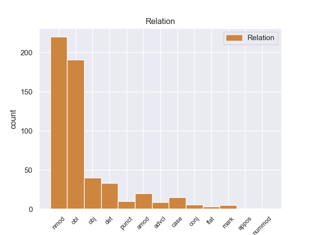
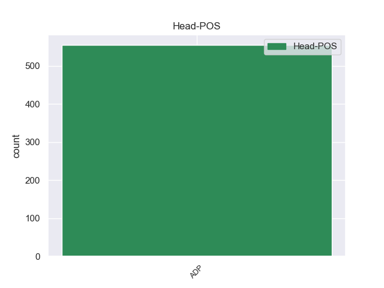
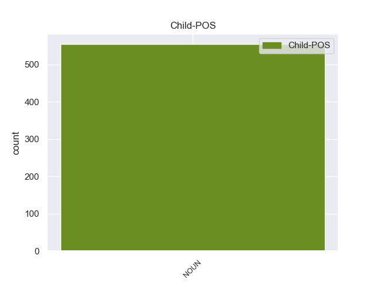

Distribution of features within this leaf



Agreement Rules sorted by frequency.
- When the dependent token is the nominal modifier(nmod) of the head token, and the head token is ADP and the dependent token is NOUN.
1 " _ _ _ _ 0 _ _ _
2 Tenemos _ _ _ _ 0 _ _ _
3 todo _ _ _ _ 0 _ _ _
4 listo _ _ _ _ 0 _ _ _
5 , _ _ _ _ 0 _ _ _
6 la _ _ _ _ 0 _ _ _
7 venta venta ADP _ Gender=Fem|Number=Sing 0 _ _ _
8 de _ _ _ _ 0 _ _ _
9 boletos boletos NOUN _ Gender=Masc|Number=Sing 7 nmod _ _
10 será _ _ _ _ 0 _ _ _
11 a _ _ _ _ 0 _ _ _
12 partir _ _ _ _ 0 _ _ _
13 de _ _ _ _ 0 _ _ _
14 mañana _ _ _ _ 0 _ _ _
15 de _ _ _ _ 0 _ _ _
16 8 _ _ _ _ 0 _ _ _
17 am _ _ _ _ 0 _ _ _
18 a _ _ _ _ 0 _ _ _
19 3 _ _ _ _ 0 _ _ _
20 pm _ _ _ _ 0 _ _ _
21 , _ _ _ _ 0 _ _ _
22 la _ _ _ _ 0 _ _ _
23 afición _ _ _ _ 0 _ _ _
24 de _ _ _ _ 0 _ _ _
25 el _ _ _ _ 0 _ _ _
26 Real _ _ _ _ 0 _ _ _
27 España _ _ _ _ 0 _ _ _
28 podrá _ _ _ _ 0 _ _ _
29 comprar _ _ _ _ 0 _ _ _
30 en _ _ _ _ 0 _ _ _
31 el _ _ _ _ 0 _ _ _
32 Banco _ _ _ _ 0 _ _ _
33 Continental _ _ _ _ 0 _ _ _
34 , _ _ _ _ 0 _ _ _
35 frente _ _ _ _ 0 _ _ _
36 a _ _ _ _ 0 _ _ _
37 el _ _ _ _ 0 _ _ _
38 estadio _ _ _ _ 0 _ _ _
39 Morazán _ _ _ _ 0 _ _ _
40 , _ _ _ _ 0 _ _ _
41 se _ _ _ _ 0 _ _ _
42 han _ _ _ _ 0 _ _ _
43 puesto _ _ _ _ 0 _ _ _
44 a _ _ _ _ 0 _ _ _
45 la _ _ _ _ 0 _ _ _
46 venta _ _ _ _ 0 _ _ _
47 800 _ _ _ _ 0 _ _ _
48 boletos _ _ _ _ 0 _ _ _
49 , _ _ _ _ 0 _ _ _
50 500 _ _ _ _ 0 _ _ _
51 en _ _ _ _ 0 _ _ _
52 sol _ _ _ _ 0 _ _ _
53 y _ _ _ _ 0 _ _ _
54 300 _ _ _ _ 0 _ _ _
55 en _ _ _ _ 0 _ _ _
56 preferencia _ _ _ _ 0 _ _ _
57 , _ _ _ _ 0 _ _ _
58 la _ _ _ _ 0 _ _ _
59 boletería _ _ _ _ 0 _ _ _
60 de _ _ _ _ 0 _ _ _
61 el _ _ _ _ 0 _ _ _
62 España _ _ _ _ 0 _ _ _
63 está _ _ _ _ 0 _ _ _
64 ya _ _ _ _ 0 _ _ _
65 identificada _ _ _ _ 0 _ _ _
66 con _ _ _ _ 0 _ _ _
67 el _ _ _ _ 0 _ _ _
68 escudo _ _ _ _ 0 _ _ _
69 de _ _ _ _ 0 _ _ _
70 el _ _ _ _ 0 _ _ _
71 equipo _ _ _ _ 0 _ _ _
72 y _ _ _ _ 0 _ _ _
73 con _ _ _ _ 0 _ _ _
74 el _ _ _ _ 0 _ _ _
75 color _ _ _ _ 0 _ _ _
76 amarillo _ _ _ _ 0 _ _ _
77 " _ _ _ _ 0 _ _ _
78 , _ _ _ _ 0 _ _ _
79 comentó _ _ _ _ 0 _ _ _
80 Rolin _ _ _ _ 0 _ _ _
81 . _ _ _ _ 0 _ _ _
1 La _ _ _ _ 0 _ _ _
2 Cabeza _ _ _ _ 0 _ _ _
3 Mediana _ _ _ _ 0 _ _ _
4 se _ _ _ _ 0 _ _ _
5 halla _ _ _ _ 0 _ _ _
6 a _ _ _ _ 0 _ _ _
7 el _ _ _ _ 0 _ _ _
8 norte _ _ _ _ 0 _ _ _
9 de _ _ _ _ 0 _ _ _
10 el _ _ _ _ 0 _ _ _
11 arroyo arroyo NOUN _ Gender=Fem|Number=Sing 41 obl _ _
12 de _ _ _ _ 0 _ _ _
13 Angostura _ _ _ _ 0 _ _ _
14 , _ _ _ _ 0 _ _ _
15 una _ _ _ _ 0 _ _ _
16 de _ _ _ _ 0 _ _ _
17 las _ _ _ _ 0 _ _ _
18 corrientes _ _ _ _ 0 _ _ _
19 fluviales _ _ _ _ 0 _ _ _
20 que _ _ _ _ 0 _ _ _
21 forman _ _ _ _ 0 _ _ _
22 el _ _ _ _ 0 _ _ _
23 río _ _ _ _ 0 _ _ _
24 Lozoya _ _ _ _ 0 _ _ _
25 , _ _ _ _ 0 _ _ _
26 y _ _ _ _ 0 _ _ _
27 a _ _ _ _ 0 _ _ _
28 el _ _ _ _ 0 _ _ _
29 sur _ _ _ _ 0 _ _ _
30 de _ _ _ _ 0 _ _ _
31 el _ _ _ _ 0 _ _ _
32 Monasterio _ _ _ _ 0 _ _ _
33 de _ _ _ _ 0 _ _ _
34 El _ _ _ _ 0 _ _ _
35 Paular _ _ _ _ 0 _ _ _
36 , _ _ _ _ 0 _ _ _
37 de _ _ _ _ 0 _ _ _
38 el _ _ _ _ 0 _ _ _
39 que _ _ _ _ 0 _ _ _
40 le _ _ _ _ 0 _ _ _
41 separan separan ADP _ Gender=Fem|Number=Sing 0 _ _ _
42 unos _ _ _ _ 0 _ _ _
43 cinco _ _ _ _ 0 _ _ _
44 kilómetros _ _ _ _ 0 _ _ _
45 . _ _ _ _ 0 _ _ _
1 " _ _ _ _ 0 _ _ _
2 No _ _ _ _ 0 _ _ _
3 es _ _ _ _ 0 _ _ _
4 como _ _ _ _ 0 _ _ _
5 en _ _ _ _ 0 _ _ _
6 otras _ _ _ _ 0 _ _ _
7 ocasiones ocasiones NOUN _ Mood=Ind|Number=Sing|Person=3|Tense=Pres|VerbForm=Fin 13 obj _ _
8 en _ _ _ _ 0 _ _ _
9 que _ _ _ _ 0 _ _ _
10 una _ _ _ _ 0 _ _ _
11 empresa _ _ _ _ 0 _ _ _
12 estadounidense _ _ _ _ 0 _ _ _
13 compra compra ADP _ Gender=Masc|Number=Sing 0 _ _ _
14 a _ _ _ _ 0 _ _ _
15 una _ _ _ _ 0 _ _ _
16 mexicana _ _ _ _ 0 _ _ _
17 o _ _ _ _ 0 _ _ _
18 la _ _ _ _ 0 _ _ _
19 absorbe _ _ _ _ 0 _ _ _
20 en _ _ _ _ 0 _ _ _
21 sus _ _ _ _ 0 _ _ _
22 negocios _ _ _ _ 0 _ _ _
23 , _ _ _ _ 0 _ _ _
24 somos _ _ _ _ 0 _ _ _
25 dos _ _ _ _ 0 _ _ _
26 empresas _ _ _ _ 0 _ _ _
27 que _ _ _ _ 0 _ _ _
28 vamos _ _ _ _ 0 _ _ _
29 a _ _ _ _ 0 _ _ _
30 trabajar _ _ _ _ 0 _ _ _
31 juntas _ _ _ _ 0 _ _ _
32 " _ _ _ _ 0 _ _ _
33 , _ _ _ _ 0 _ _ _
34 indicó _ _ _ _ 0 _ _ _
35 Allard _ _ _ _ 0 _ _ _
36 . _ _ _ _ 0 _ _ _
1 El _ _ _ _ 0 _ _ _
2 ingreso ingreso ADP _ Gender=Fem|Number=Sing 0 _ _ _
3 per _ _ _ _ 0 _ _ _
4 cápita _ _ _ _ 0 _ _ _
5 para _ _ _ _ 0 _ _ _
6 la _ _ _ _ 0 _ _ _
7 localidad localidad NOUN _ Gender=Fem|Number=Sing 2 det _ _
8 era _ _ _ _ 0 _ _ _
9 de _ _ _ _ 0 _ _ _
10 $ _ _ _ _ 0 _ _ _
11 14.159 _ _ _ _ 0 _ _ _
12 . _ _ _ _ 0 _ _ _
1 Su _ _ _ _ 0 _ _ _
2 padre _ _ _ _ 0 _ _ _
3 , _ _ _ _ 0 _ _ _
4 buhonero _ _ _ _ 0 _ _ _
5 , _ _ _ _ 0 _ _ _
6 era _ _ _ _ 0 _ _ _
7 hijo _ _ _ _ 0 _ _ _
8 natural _ _ _ _ 0 _ _ _
9 de _ _ _ _ 0 _ _ _
10 una _ _ _ _ 0 _ _ _
11 prostituta _ _ _ _ 0 _ _ _
12 y _ _ _ _ 0 _ _ _
13 de _ _ _ _ 0 _ _ _
14 un _ _ _ _ 0 _ _ _
15 sacerdote _ _ _ _ 0 _ _ _
16 que _ _ _ _ 0 _ _ _
17 jamás _ _ _ _ 0 _ _ _
18 llegó _ _ _ _ 0 _ _ _
19 a _ _ _ _ 0 _ _ _
20 reconocer _ _ _ _ 0 _ _ _
21 le _ _ _ _ 0 _ _ _
22 , _ _ _ _ 0 _ _ _
23 mientras _ _ _ _ 0 _ _ _
24 que _ _ _ _ 0 _ _ _
25 su _ _ _ _ 0 _ _ _
26 madre _ _ _ _ 0 _ _ _
27 descendía _ _ _ _ 0 _ _ _
28 directamente _ _ _ _ 0 _ _ _
29 de _ _ _ _ 0 _ _ _
30 el _ _ _ _ 0 _ _ _
31 poderoso _ _ _ _ 0 _ _ _
32 linaje _ _ _ _ 0 _ _ _
33 de _ _ _ _ 0 _ _ _
34 los _ _ _ _ 0 _ _ _
35 Du _ _ _ _ 0 _ _ _
36 Mesnil _ _ _ _ 0 _ _ _
37 d' _ _ _ _ 0 _ _ _
38 Argentelles _ _ _ _ 0 _ _ _
39 , _ _ _ _ 0 _ _ _
40 una _ _ _ _ 0 _ _ _
41 familia familia ADP _ Gender=Fem|Number=Sing 0 _ _ _
42 aristócrata aristócrata NOUN _ Gender=Masc|Number=Sing 41 amod _ _
43 , _ _ _ _ 0 _ _ _
44 señores _ _ _ _ 0 _ _ _
45 de _ _ _ _ 0 _ _ _
46 Argentelles _ _ _ _ 0 _ _ _
47 y _ _ _ _ 0 _ _ _
48 de _ _ _ _ 0 _ _ _
49 Mesnil _ _ _ _ 0 _ _ _
50 entre _ _ _ _ 0 _ _ _
51 otros _ _ _ _ 0 _ _ _
52 territorios _ _ _ _ 0 _ _ _
53 . _ _ _ _ 0 _ _ _
1 Jugó _ _ _ _ 0 _ _ _
2 3 _ _ _ _ 0 _ _ _
3 temporadas temporadas NOUN _ Gender=Masc|Number=Sing 17 case _ _
4 con _ _ _ _ 0 _ _ _
5 los _ _ _ _ 0 _ _ _
6 Rockets _ _ _ _ 0 _ _ _
7 , _ _ _ _ 0 _ _ _
8 siendo _ _ _ _ 0 _ _ _
9 la _ _ _ _ 0 _ _ _
10 mejor _ _ _ _ 0 _ _ _
11 de _ _ _ _ 0 _ _ _
12 ellas _ _ _ _ 0 _ _ _
13 la _ _ _ _ 0 _ _ _
14 última _ _ _ _ 0 _ _ _
15 , _ _ _ _ 0 _ _ _
16 la _ _ _ _ 0 _ _ _
17 temporada temporada ADP _ Gender=Masc|Number=Sing 0 _ _ _
18 1970-71 _ _ _ _ 0 _ _ _
19 , _ _ _ _ 0 _ _ _
20 en _ _ _ _ 0 _ _ _
21 la _ _ _ _ 0 _ _ _
22 que _ _ _ _ 0 _ _ _
23 promedió _ _ _ _ 0 _ _ _
24 9,6 _ _ _ _ 0 _ _ _
25 puntos _ _ _ _ 0 _ _ _
26 y _ _ _ _ 0 _ _ _
27 6,2 _ _ _ _ 0 _ _ _
28 rebotes _ _ _ _ 0 _ _ _
29 por _ _ _ _ 0 _ _ _
30 partido _ _ _ _ 0 _ _ _
31 . _ _ _ _ 0 _ _ _
1 Una _ _ _ _ 0 _ _ _
2 comparación _ _ _ _ 0 _ _ _
3 similar _ _ _ _ 0 _ _ _
4 es _ _ _ _ 0 _ _ _
5 evidente _ _ _ _ 0 _ _ _
6 entre _ _ _ _ 0 _ _ _
7 la _ _ _ _ 0 _ _ _
8 muestra muestra ADP _ Gender=Masc|Number=Sing 0 _ _ _
9 " _ _ _ _ 0 _ _ _
10 3 _ _ _ _ 0 _ _ _
11 1979 _ _ _ _ 0 _ _ _
12 " _ _ _ _ 0 _ _ _
13 y _ _ _ _ 0 _ _ _
14 1.963 _ _ _ _ 0 _ _ _
15 núcleos _ _ _ _ 0 _ _ _
16 de _ _ _ _ 0 _ _ _
17 Camp _ _ _ _ 0 _ _ _
18 Century century NOUN _ Mood=Ind|Number=Sing|Person=3|Tense=Pres|VerbForm=Fin 8 punct _ _
19 con _ _ _ _ 0 _ _ _
20 respecto _ _ _ _ 0 _ _ _
21 a _ _ _ _ 0 _ _ _
22 ese _ _ _ _ 0 _ _ _
23 período _ _ _ _ 0 _ _ _
24 . _ _ _ _ 0 _ _ _
1 Este _ _ _ _ 0 _ _ _
2 sin _ _ _ _ 0 _ _ _
3 el _ _ _ _ 0 _ _ _
4 consentimiento _ _ _ _ 0 _ _ _
5 de _ _ _ _ 0 _ _ _
6 Manson _ _ _ _ 0 _ _ _
7 , _ _ _ _ 0 _ _ _
8 re _ _ _ _ 0 _ _ _
9 - _ _ _ _ 0 _ _ _
10 escribió _ _ _ _ 0 _ _ _
11 la _ _ _ _ 0 _ _ _
12 canción _ _ _ _ 0 _ _ _
13 el _ _ _ _ 0 _ _ _
14 11 _ _ _ _ 0 _ _ _
15 de _ _ _ _ 0 _ _ _
16 septiembre _ _ _ _ 0 _ _ _
17 de _ _ _ _ 0 _ _ _
18 1968 _ _ _ _ 0 _ _ _
19 , _ _ _ _ 0 _ _ _
20 cambiando _ _ _ _ 0 _ _ _
21 algunas _ _ _ _ 0 _ _ _
22 cosas _ _ _ _ 0 _ _ _
23 de _ _ _ _ 0 _ _ _
24 la _ _ _ _ 0 _ _ _
25 lírica _ _ _ _ 0 _ _ _
26 de _ _ _ _ 0 _ _ _
27 el _ _ _ _ 0 _ _ _
28 tema _ _ _ _ 0 _ _ _
29 , _ _ _ _ 0 _ _ _
30 la _ _ _ _ 0 _ _ _
31 cantó _ _ _ _ 0 _ _ _
32 y _ _ _ _ 0 _ _ _
33 grabó grabó ADP _ Gender=Fem|Number=Sing 0 _ _ _
34 con _ _ _ _ 0 _ _ _
35 su _ _ _ _ 0 _ _ _
36 grupo grupo NOUN _ Gender=Fem|Number=Sing 33 advcl _ _
37 e _ _ _ _ 0 _ _ _
38 incluyó _ _ _ _ 0 _ _ _
39 en _ _ _ _ 0 _ _ _
40 el _ _ _ _ 0 _ _ _
41 álbum _ _ _ _ 0 _ _ _
42 20 _ _ _ _ 0 _ _ _
43 / _ _ _ _ 0 _ _ _
44 20 _ _ _ _ 0 _ _ _
45 de _ _ _ _ 0 _ _ _
46 el _ _ _ _ 0 _ _ _
47 año _ _ _ _ 0 _ _ _
48 1969 _ _ _ _ 0 _ _ _
49 . _ _ _ _ 0 _ _ _
1 Fue _ _ _ _ 0 _ _ _
2 un _ _ _ _ 0 _ _ _
3 próspero _ _ _ _ 0 _ _ _
4 y _ _ _ _ 0 _ _ _
5 vital _ _ _ _ 0 _ _ _
6 centro _ _ _ _ 0 _ _ _
7 comercial _ _ _ _ 0 _ _ _
8 en _ _ _ _ 0 _ _ _
9 la _ _ _ _ 0 _ _ _
10 antigüedad _ _ _ _ 0 _ _ _
11 , _ _ _ _ 0 _ _ _
12 traficaban traficaban NOUN _ Gender=Fem|Number=Sing 28 conj _ _
13 con _ _ _ _ 0 _ _ _
14 perlas _ _ _ _ 0 _ _ _
15 , _ _ _ _ 0 _ _ _
16 piedras _ _ _ _ 0 _ _ _
17 semipreciosas _ _ _ _ 0 _ _ _
18 , _ _ _ _ 0 _ _ _
19 [ _ _ _ _ 0 _ _ _
20 metales _ _ _ _ 0 _ _ _
21 , _ _ _ _ 0 _ _ _
22 piedras _ _ _ _ 0 _ _ _
23 preciosas _ _ _ _ 0 _ _ _
24 y _ _ _ _ 0 _ _ _
25 valiosos _ _ _ _ 0 _ _ _
26 adornos _ _ _ _ 0 _ _ _
27 que _ _ _ _ 0 _ _ _
28 llegaban llegaban ADP _ Gender=Fem|Number=Sing 0 _ _ _
29 a _ _ _ _ 0 _ _ _
30 los _ _ _ _ 0 _ _ _
31 rincones _ _ _ _ 0 _ _ _
32 más _ _ _ _ 0 _ _ _
33 alejados _ _ _ _ 0 _ _ _
34 de _ _ _ _ 0 _ _ _
35 el _ _ _ _ 0 _ _ _
36 Extremo _ _ _ _ 0 _ _ _
37 Oriente _ _ _ _ 0 _ _ _
38 y _ _ _ _ 0 _ _ _
39 África _ _ _ _ 0 _ _ _
40 . _ _ _ _ 0 _ _ _
1 Te _ _ _ _ 0 _ _ _
2 engañan _ _ _ _ 0 _ _ _
3 para _ _ _ _ 0 _ _ _
4 que _ _ _ _ 0 _ _ _
5 creas creas ADP _ Gender=Fem|Number=Sing 0 _ _ _
6 que _ _ _ _ 0 _ _ _
7 gastas _ _ _ _ 0 _ _ _
8 un _ _ _ _ 0 _ _ _
9 euro _ _ _ _ 0 _ _ _
10 y _ _ _ _ 0 _ _ _
11 para _ _ _ _ 0 _ _ _
12 quitar _ _ _ _ 0 _ _ _
13 el _ _ _ _ 0 _ _ _
14 hambre _ _ _ _ 0 _ _ _
15 tienes _ _ _ _ 0 _ _ _
16 que _ _ _ _ 0 _ _ _
17 gastar gastar NOUN _ Gender=Masc|Number=Sing 5 mark _ _
18 más _ _ _ _ 0 _ _ _
19 de _ _ _ _ 0 _ _ _
20 10 _ _ _ _ 0 _ _ _
21 . _ _ _ _ 0 _ _ _
1 La _ _ _ _ 0 _ _ _
2 Fuerza fuerza ADP _ Gender=Fem|Number=Sing 0 _ _ _
3 Aérea _ _ _ _ 0 _ _ _
4 de _ _ _ _ 0 _ _ _
5 los _ _ _ _ 0 _ _ _
6 Estados _ _ _ _ 0 _ _ _
7 Unidos _ _ _ _ 0 _ _ _
8 tenía _ _ _ _ 0 _ _ _
9 planeado _ _ _ _ 0 _ _ _
10 en _ _ _ _ 0 _ _ _
11 un _ _ _ _ 0 _ _ _
12 principio _ _ _ _ 0 _ _ _
13 adquirir _ _ _ _ 0 _ _ _
14 650 _ _ _ _ 0 _ _ _
15 F f NOUN _ Gender=Masc|Number=Sing 2 flat _ _
16 - _ _ _ _ 0 _ _ _
17 22 _ _ _ _ 0 _ _ _
18 , _ _ _ _ 0 _ _ _
19 pero _ _ _ _ 0 _ _ _
20 sólo _ _ _ _ 0 _ _ _
21 se _ _ _ _ 0 _ _ _
22 construirán _ _ _ _ 0 _ _ _
23 187 _ _ _ _ 0 _ _ _
24 ejemplares _ _ _ _ 0 _ _ _
25 , _ _ _ _ 0 _ _ _
26 como _ _ _ _ 0 _ _ _
27 resultado _ _ _ _ 0 _ _ _
28 de _ _ _ _ 0 _ _ _
29 su _ _ _ _ 0 _ _ _
30 elevado _ _ _ _ 0 _ _ _
31 coste _ _ _ _ 0 _ _ _
32 de _ _ _ _ 0 _ _ _
33 despegue _ _ _ _ 0 _ _ _
34 unitario _ _ _ _ 0 _ _ _
35 que _ _ _ _ 0 _ _ _
36 ronda _ _ _ _ 0 _ _ _
37 los _ _ _ _ 0 _ _ _
38 150 _ _ _ _ 0 _ _ _
39 millones _ _ _ _ 0 _ _ _
40 de _ _ _ _ 0 _ _ _
41 dólares _ _ _ _ 0 _ _ _
42 . _ _ _ _ 0 _ _ _
1 Hoy _ _ _ _ 0 _ _ _
2 en _ _ _ _ 0 _ _ _
3 día _ _ _ _ 0 _ _ _
4 , _ _ _ _ 0 _ _ _
5 numerosas _ _ _ _ 0 _ _ _
6 calles _ _ _ _ 0 _ _ _
7 de _ _ _ _ 0 _ _ _
8 el _ _ _ _ 0 _ _ _
9 barrio _ _ _ _ 0 _ _ _
10 llevan _ _ _ _ 0 _ _ _
11 los _ _ _ _ 0 _ _ _
12 nombres _ _ _ _ 0 _ _ _
13 de _ _ _ _ 0 _ _ _
14 antiguos _ _ _ _ 0 _ _ _
15 propietarios _ _ _ _ 0 _ _ _
16 de _ _ _ _ 0 _ _ _
17 los _ _ _ _ 0 _ _ _
18 terrenos _ _ _ _ 0 _ _ _
19 , _ _ _ _ 0 _ _ _
20 como _ _ _ _ 0 _ _ _
21 la _ _ _ _ 0 _ _ _
22 calle _ _ _ _ 0 _ _ _
23 Hortal _ _ _ _ 0 _ _ _
24 ( _ _ _ _ 0 _ _ _
25 Miquel _ _ _ _ 0 _ _ _
26 Hortal _ _ _ _ 0 _ _ _
27 i _ _ _ _ 0 _ _ _
28 Arisó _ _ _ _ 0 _ _ _
29 ) _ _ _ _ 0 _ _ _
30 , _ _ _ _ 0 _ _ _
31 Batet _ _ _ _ 0 _ _ _
32 ( _ _ _ _ 0 _ _ _
33 Amàlia amàlia NOUN _ Mood=Ind|Number=Sing|Person=3|Tense=Pres|VerbForm=Fin 41 appos _ _
34 Batet _ _ _ _ 0 _ _ _
35 i _ _ _ _ 0 _ _ _
36 Gil _ _ _ _ 0 _ _ _
37 ) _ _ _ _ 0 _ _ _
38 , _ _ _ _ 0 _ _ _
39 Ros _ _ _ _ 0 _ _ _
40 ( _ _ _ _ 0 _ _ _
41 Baudili baudili ADP _ Gender=Fem|Number=Sing 0 _ _ _
42 Ros _ _ _ _ 0 _ _ _
43 i _ _ _ _ 0 _ _ _
44 Rodés _ _ _ _ 0 _ _ _
45 ) _ _ _ _ 0 _ _ _
46 , _ _ _ _ 0 _ _ _
47 Tolrà _ _ _ _ 0 _ _ _
48 ( _ _ _ _ 0 _ _ _
49 Antoni _ _ _ _ 0 _ _ _
50 Tolrà _ _ _ _ 0 _ _ _
51 i _ _ _ _ 0 _ _ _
52 Fornés _ _ _ _ 0 _ _ _
53 ) _ _ _ _ 0 _ _ _
54 , _ _ _ _ 0 _ _ _
55 Gabarnet _ _ _ _ 0 _ _ _
56 ( _ _ _ _ 0 _ _ _
57 Artur _ _ _ _ 0 _ _ _
58 Gabarnet _ _ _ _ 0 _ _ _
59 i _ _ _ _ 0 _ _ _
60 Rosés _ _ _ _ 0 _ _ _
61 ) _ _ _ _ 0 _ _ _
62 , _ _ _ _ 0 _ _ _
63 Xinxó _ _ _ _ 0 _ _ _
64 ( _ _ _ _ 0 _ _ _
65 Josep _ _ _ _ 0 _ _ _
66 Xinxó _ _ _ _ 0 _ _ _
67 i _ _ _ _ 0 _ _ _
68 Canellas _ _ _ _ 0 _ _ _
69 ) _ _ _ _ 0 _ _ _
70 , _ _ _ _ 0 _ _ _
71 Montserrat _ _ _ _ 0 _ _ _
72 Casanovas _ _ _ _ 0 _ _ _
73 , _ _ _ _ 0 _ _ _
74 etc. _ _ _ _ 0 _ _ _
1 Los _ _ _ _ 0 _ _ _
2 daños _ _ _ _ 0 _ _ _
3 causados _ _ _ _ 0 _ _ _
4 a _ _ _ _ 0 _ _ _
5 el _ _ _ _ 0 _ _ _
6 quitar _ _ _ _ 0 _ _ _
7 le _ _ _ _ 0 _ _ _
8 las _ _ _ _ 0 _ _ _
9 cubiertas _ _ _ _ 0 _ _ _
10 probablemente _ _ _ _ 0 _ _ _
11 expliquen expliquen ADP _ Gender=Fem|Number=Sing 0 _ _ _
12 la _ _ _ _ 0 _ _ _
13 pérdida pérdida NOUN _ Gender=Masc|Number=Sing 11 nummod _ _
14 de _ _ _ _ 0 _ _ _
15 ilustraciones _ _ _ _ 0 _ _ _
16 a _ _ _ _ 0 _ _ _
17 el _ _ _ _ 0 _ _ _
18 principio _ _ _ _ 0 _ _ _
19 y _ _ _ _ 0 _ _ _
20 final _ _ _ _ 0 _ _ _
21 de _ _ _ _ 0 _ _ _
22 el _ _ _ _ 0 _ _ _
23 libro _ _ _ _ 0 _ _ _
24 . _ _ _ _ 0 _ _ _
Disagree Examples:
1 Sin _ _ _ _ 0 _ _ _
2 embargo _ _ _ _ 0 _ _ _
3 , _ _ _ _ 0 _ _ _
4 se _ _ _ _ 0 _ _ _
5 han _ _ _ _ 0 _ _ _
6 observado observado ADP _ Gender=Fem|Number=Plur 0 _ _ _
7 semejanzas _ _ _ _ 0 _ _ _
8 con _ _ _ _ 0 _ _ _
9 Aeolosaurus _ _ _ _ 0 _ _ _
10 y _ _ _ _ 0 _ _ _
11 el _ _ _ _ 0 _ _ _
12 titanosauriano _ _ _ _ 0 _ _ _
13 de _ _ _ _ 0 _ _ _
14 el _ _ _ _ 0 _ _ _
15 Grupo _ _ _ _ 0 _ _ _
16 Bauru bauru NOUN _ Gender=Fem|Number=Sing 6 nmod _ _
17 conocida _ _ _ _ 0 _ _ _
18 antes _ _ _ _ 0 _ _ _
19 como _ _ _ _ 0 _ _ _
20 el _ _ _ _ 0 _ _ _
21 " _ _ _ _ 0 _ _ _
22 Titanosaurio _ _ _ _ 0 _ _ _
23 de _ _ _ _ 0 _ _ _
24 Peirópolis _ _ _ _ 0 _ _ _
25 " _ _ _ _ 0 _ _ _
26 , _ _ _ _ 0 _ _ _
27 ahora _ _ _ _ 0 _ _ _
28 llamado _ _ _ _ 0 _ _ _
29 Trigonosaurus _ _ _ _ 0 _ _ _
30 . _ _ _ _ 0 _ _ _
1 El _ _ _ _ 0 _ _ _
2 árbol _ _ _ _ 0 _ _ _
3 inicial _ _ _ _ 0 _ _ _
4 describiendo _ _ _ _ 0 _ _ _
5 el _ _ _ _ 0 _ _ _
6 parentesco _ _ _ _ 0 _ _ _
7 de _ _ _ _ 0 _ _ _
8 las _ _ _ _ 0 _ _ _
9 secuencias _ _ _ _ 0 _ _ _
10 se _ _ _ _ 0 _ _ _
11 basa basa ADP _ Gender=Fem|Number=Sing 0 _ _ _
12 en _ _ _ _ 0 _ _ _
13 comparaciones _ _ _ _ 0 _ _ _
14 de _ _ _ _ 0 _ _ _
15 emparejamientos _ _ _ _ 0 _ _ _
16 que _ _ _ _ 0 _ _ _
17 podrían _ _ _ _ 0 _ _ _
18 incluir _ _ _ _ 0 _ _ _
19 métodos métodos NOUN _ Gender=Fem|Number=Plur 11 det _ _
20 de _ _ _ _ 0 _ _ _
21 emparejamiento _ _ _ _ 0 _ _ _
22 heurístico _ _ _ _ 0 _ _ _
23 para _ _ _ _ 0 _ _ _
24 alineamientos _ _ _ _ 0 _ _ _
25 similares _ _ _ _ 0 _ _ _
26 a _ _ _ _ 0 _ _ _
27 FASTA _ _ _ _ 0 _ _ _
28 . _ _ _ _ 0 _ _ _
1 La _ _ _ _ 0 _ _ _
2 biblioteca _ _ _ _ 0 _ _ _
3 se _ _ _ _ 0 _ _ _
4 fundó fundó ADP _ Gender=Fem|Number=Sing 0 _ _ _
5 por _ _ _ _ 0 _ _ _
6 Martin _ _ _ _ 0 _ _ _
7 Bodmer _ _ _ _ 0 _ _ _
8 , _ _ _ _ 0 _ _ _
9 y _ _ _ _ 0 _ _ _
10 es _ _ _ _ 0 _ _ _
11 famosa _ _ _ _ 0 _ _ _
12 por _ _ _ _ 0 _ _ _
13 ser _ _ _ _ 0 _ _ _
14 el _ _ _ _ 0 _ _ _
15 hogar _ _ _ _ 0 _ _ _
16 de _ _ _ _ 0 _ _ _
17 los _ _ _ _ 0 _ _ _
18 Papiros papiros NOUN _ Gender=Fem|Number=Plur 4 nmod _ _
19 Bodmer _ _ _ _ 0 _ _ _
20 . _ _ _ _ 0 _ _ _
1 Chondrostoma _ _ _ _ 0 _ _ _
2 oxyrhynchum _ _ _ _ 0 _ _ _
3 es _ _ _ _ 0 _ _ _
4 una _ _ _ _ 0 _ _ _
5 especie _ _ _ _ 0 _ _ _
6 de _ _ _ _ 0 _ _ _
7 peces _ _ _ _ 0 _ _ _
8 de _ _ _ _ 0 _ _ _
9 la _ _ _ _ 0 _ _ _
10 familia familia ADP _ Gender=Fem|Number=Sing 0 _ _ _
11 de _ _ _ _ 0 _ _ _
12 los _ _ _ _ 0 _ _ _
13 Cyprinidae cyprinida NOUN _ Gender=Fem|Number=Plur 10 nmod _ _
14 en _ _ _ _ 0 _ _ _
15 el _ _ _ _ 0 _ _ _
16 orden _ _ _ _ 0 _ _ _
17 de _ _ _ _ 0 _ _ _
18 los _ _ _ _ 0 _ _ _
19 Cypriniformes _ _ _ _ 0 _ _ _
20 . _ _ _ _ 0 _ _ _
1 Los _ _ _ _ 0 _ _ _
2 tallos _ _ _ _ 0 _ _ _
3 se _ _ _ _ 0 _ _ _
4 utilizan utilizan ADP _ Gender=Fem|Number=Plur 0 _ _ _
5 como _ _ _ _ 0 _ _ _
6 cuerda _ _ _ _ 0 _ _ _
7 para _ _ _ _ 0 _ _ _
8 atar atar NOUN _ Gender=Fem|Number=Sing 4 nmod _ _
9 . _ _ _ _ 0 _ _ _